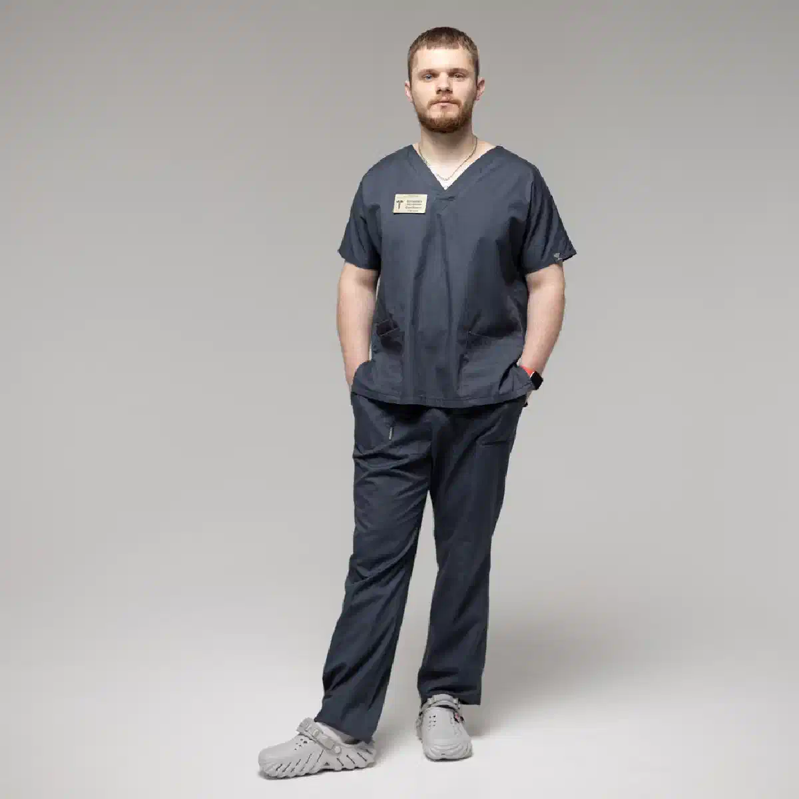
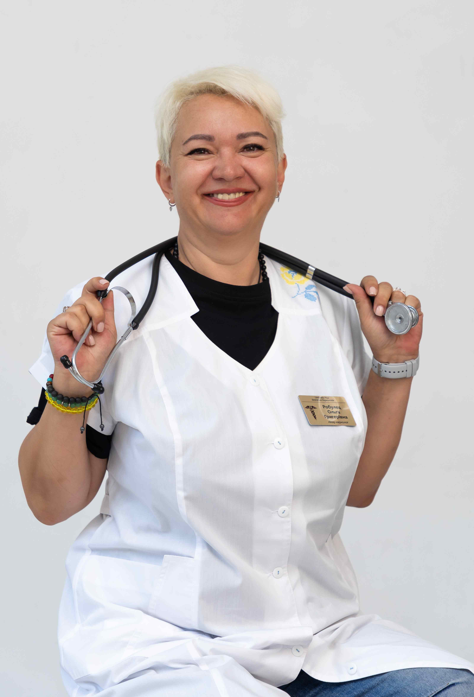

+38(068)
79 72 782
+38(068)
79 72 782Кодирование от алкоголизма лазером
Современный метод защиты от алкоголя


Бесплатная консультация, работаем круглосуточно 24/7
Современный метод защиты от алкоголя

Дата написания: 10 июл. 2026 г.
Последнее обновление: 10 июл. 2026 г.
Кодирование от алкоголизма лазером в Одессе — это современный аппаратный метод помощи при алкогольной зависимости, который применяется для снижения тяги к спиртному, укрепления мотивации к трезвости и профилактики повторных срывов. Такой вариант кодирования может рассматриваться как альтернатива медикаментозным методам, если пациент не хочет использовать укол дисульфирама, подшивку или другие препараты, вызывающие жесткую реакцию на алкоголь.
Лазерное кодирование от алкоголизма проводится только после консультации нарколога, оценки состояния пациента и уточнения противопоказаний. Врач учитывает длительность употребления алкоголя, наличие запоев, общее состояние организма, давление, работу сердца, печени, нервной системы, психоэмоциональное состояние и готовность человека к трезвости. Наилучший результат достигается тогда, когда кодирование проводится не формально, а как часть комплексного лечения алкогольной зависимости.
Лазерное кодирование от алкоголизма — это метод аппаратного воздействия, который направлен на снижение патологической тяги к спиртному и поддержку нервной системы в период отказа от алкоголя. В основе процедуры лежит воздействие лазером на определенные биологически активные зоны, связанные с регуляцией нервной системы, эмоционального состояния и поведенческих реакций.
Такой метод не предполагает введения дисульфирама или других препаратов, которые вызывают резкую непереносимость алкоголя. Поэтому лазерное кодирование часто выбирают пациенты, которые хотят пройти более мягкую процедуру, без укола, подшивки и медикаментозной нагрузки на организм. При этом важно понимать, что лазерное кодирование не является «волшебной кнопкой». Оно помогает сформировать дополнительную защиту от употребления алкоголя, но требует осознанного желания пациента отказаться от спиртного.
Лазерное кодирование может быть рекомендовано людям с психологической тягой к алкоголю, частыми срывами, привычкой употреблять спиртное на фоне стресса, тревоги, бессонницы или эмоционального напряжения. Перед процедурой врач обязательно объясняет, как проходит кодирование, какие ограничения нужно соблюдать и почему после процедуры важно не возвращаться к алкоголю.
Кодирование лазером отличается от укола с дисульфирамом тем, что не связано с введением препарата, который вызывает токсическую реакцию при употреблении алкоголя. При медикаментозном кодировании дисульфирам блокирует нормальный обмен алкоголя в организме, из-за чего при срыве могут возникнуть сильная тошнота, рвота, сердцебиение, скачки давления, страх, слабость и другие неприятные реакции. Лазерное кодирование действует иначе и не основано на химической несовместимости с алкоголем.
Для некоторых пациентов это является преимуществом. Лазерное кодирование может восприниматься как более мягкий и щадящий метод, особенно если человек боится уколов, не хочет подшивку, имеет опасения по поводу медикаментозной нагрузки или уже сталкивался с неприятным опытом лекарственного кодирования. Также лазерный метод может подойти тем, кому важно сохранить психологический контроль, а не только страх перед последствиями употребления.
Но нельзя сказать, что лазерное кодирование всегда лучше укола с дисульфирамом. У каждого метода есть свои показания. При выраженной алкогольной зависимости, частых тяжелых запоях и низкой мотивации врач может рекомендовать медикаментозную защиту, психотерапию, стационарное лечение алкоголизма или комбинированный подход. Выбор метода должен делать нарколог после консультации, а не сам пациент по рекламе или советам знакомых.
Кодирование от алкоголизма лазером подходит пациентам, которые хотят отказаться от спиртного, но боятся повторного срыва и нуждаются в дополнительной поддержке. Чаще всего такой метод рассматривают люди, у которых уже были попытки бросить пить самостоятельно, но через некоторое время возвращалась тяга к алкоголю, появлялись застолья, эпизоды употребления или повторные запои.
Лазерное кодирование может подойти пациентам с психологической зависимостью, привычкой пить после стресса, усталости, конфликтов, тревоги или бессонницы. Также метод может рассматриваться для людей, которым важно пройти процедуру без укола, без подшивки и без медикаментозной реакции на алкоголь. Особенно важно, чтобы пациент понимал цель лечения и был готов соблюдать рекомендации врача после кодирования.
Процедура не проводится человеку в состоянии алкогольного опьянения. Если пациент находится в запое, чувствует сильную слабость, тремор, тревогу, скачки давления, бессонницу или признаки абстиненции, сначала нужна стабилизация состояния. В таких случаях врач может рекомендовать вывод из запоя , детоксикацию и только после восстановления рассматривать лазерное кодирование от алкоголизма.
Перед кодированием от алкоголизма нужно быть трезвым, потому что процедура должна проводиться в стабильном физическом и психоэмоциональном состоянии. Если человек находится под действием алкоголя, переживает абстиненцию, сильную интоксикацию, тремор, тревогу или скачки давления, организм работает с перегрузкой. В таком состоянии невозможно правильно оценить мотивацию пациента, его самочувствие и готовность к отказу от спиртного.
Трезвость перед кодированием нужна не только для безопасности, но и для эффективности процедуры. Пациент должен осознанно понимать, зачем он кодируется, какие ограничения принимает и что будет делать после процедуры. Кодирование не должно проводиться под давлением родственников, в состоянии паники или сразу после очередного алкогольного срыва, когда человек физически и эмоционально нестабилен.
Обычно перед кодированием требуется период трезвости от нескольких дней. Точный срок определяет врач после консультации. Если человек пил долго, был запой, сильное похмелье или алкогольная интоксикация, сначала проводится детоксикация и восстановление организма. В таких случаях может потребоваться медицинский выход из запоя дома , после которого можно безопасно рассматривать лазерное кодирование.
Подготовка к лазерному кодированию от алкоголя начинается с консультации нарколога. Врач уточняет, как часто человек употребляет спиртное, были ли запои, сколько длится зависимость, были ли предыдущие попытки лечения, кодирование уколом, подшивка, психотерапия или стационарное лечение. Также важно рассказать врачу о хронических заболеваниях, принимаемых лекарствах, проблемах с сердцем, давлением, печенью, нервной системой и психикой.
Перед процедурой пациенту необходимо отказаться от алкоголя и выдержать рекомендованный период трезвости. Нельзя приходить на кодирование после употребления спиртного, в состоянии похмелья или выраженной абстиненции. Если есть слабость, дрожь, тревога, бессонница, рвота, обезвоживание или скачки давления, сначала нужно стабилизировать состояние. Также важна психологическая подготовка. Пациент должен понимать, что кодирование — это не разрешение «не думать о проблеме», а начало нового этапа лечения. После процедуры нужно менять привычки, избегать алкогольных компаний, работать с причинами употребления и при необходимости подключать психотерапию. Чем серьезнее человек относится к подготовке, тем выше вероятность стойкого результата.
Детоксикация перед лазерным кодированием нужна в тех случаях, когда человек недавно употреблял алкоголь, находился в запое или испытывает симптомы интоксикации. После длительного употребления организм может быть обезвожен, истощен, перегружен токсинами, а нервная система — раздражена и нестабильна. На этом фоне могут появляться тревога, тремор, бессонница, слабость, тошнота, головная боль, скачки давления и учащенное сердцебиение.
Кодирование в таком состоянии проводить нельзя. Сначала нужно вывести человека из острого состояния, восстановить водно-солевой баланс, снизить проявления абстиненции и стабилизировать самочувствие. Для этого может применяться капельница, медикаментозная поддержка, контроль давления, пульса и общего состояния. Формат помощи подбирается врачом индивидуально. Детоксикация капельницей от запоя не заменяет кодирование, но помогает подготовить организм к процедуре. После стабилизации пациент лучше спит, яснее мыслит, спокойнее воспринимает рекомендации врача и может осознанно принять решение о дальнейшем лечении. Именно поэтому при запоях лазерное кодирование обычно проводится не сразу, а после предварительного восстановления.
Лазерное кодирование после запоя можно делать только после выхода из острого состояния и периода трезвости. Если человек только прекратил пить, плохо себя чувствует, не спит, дрожит, испытывает тревогу, слабость, тошноту или скачки давления, кодирование лучше отложить. В этот момент организму нужна не кодировка, а медицинская помощь при абстиненции и интоксикации.
После запоя врач оценивает состояние пациента и решает, можно ли проводить процедуру. Иногда достаточно домашней детоксикации и нескольких дней восстановления. В более тяжелых случаях может потребоваться стационар, особенно если есть судороги, галлюцинации, спутанность сознания, проблемы с сердцем, резкие скачки давления или тяжелое общее состояние. Важно не торопиться с кодированием сразу после запоя. Если провести процедуру слишком рано, когда человек физически истощен и психологически нестабилен, результат может быть слабее. Грамотная схема выглядит так: сначала вывод из запоя и детоксикация , затем восстановление, консультация нарколога и только потом лазерное кодирование от алкоголизма.
Процедура лазерного кодирования начинается с консультации нарколога. Врач беседует с пациентом, уточняет историю употребления алкоголя, оценивает состояние, мотивацию и наличие противопоказаний. Перед процедурой человеку объясняют, как работает метод, какие ощущения могут быть во время сеанса, сколько времени занимает кодирование и какие правила нужно соблюдать после него. Во время процедуры проводится аппаратное воздействие лазером на определенные зоны. Сеанс обычно проходит спокойно, без боли и выраженного дискомфорта. Пациент находится в сознании, может общаться с врачом и не нуждается в наркозе. Метод не предполагает хирургического вмешательства, подшивки или введения препарата.
После завершения процедуры врач дает рекомендации по дальнейшему поведению. Пациенту объясняют, почему нельзя употреблять алкоголь, как избегать провоцирующих ситуаций, что делать при появлении тяги и когда обращаться за повторной консультацией. При необходимости лазерное кодирование может сочетаться с психотерапией, поддерживающими консультациями и лечением алкогольной зависимости.
Длительность действия лазерного кодирования от алкоголя зависит от выбранной программы, состояния пациента, степени зависимости, мотивации и соблюдения рекомендаций врача. Нельзя заранее гарантировать одинаковый результат для всех пациентов, потому что алкогольная зависимость у каждого развивается по-разному. У одного человека основная проблема связана с привычкой и стрессом, у другого — с длительными запоями, сильной тягой и нарушением контроля.
Сама процедура обычно занимает немного времени, но полноценное лечение не ограничивается одним сеансом. Врач может рекомендовать дополнительные консультации нарколога Одесса , психотерапевтическую поддержку, повторный осмотр или комплексную программу восстановления. Особенно это важно, если до кодирования были частые срывы, тяжелые запои или неудачные попытки бросить пить самостоятельно. Срок кодирования обсуждается индивидуально. Для одних пациентов достаточно краткосрочной поддержки, другим нужна более длительная защита и постоянная работа с зависимостью. Важно понимать: чем лучше человек соблюдает трезвость, меняет окружение, избегает провоцирующих ситуаций и работает с причинами употребления, тем выше шанс сохранить результат.
Стоимость кодирования от алкоголизма в Одессе лазером начинается от 10000 грн.
| Кодирование уколом | Цена |
|---|---|
| Кодирование уколом Дисульфирам (3, 6, 12 месяцев) | От 6000 грн |
| Кодирование уколом Эспераль (3, 6, 12 месяцев) | От 8000 грн |
| Кодирование уколом Тетлонг (3, 6, 12 месяцев) | От 8000 грн |
| Кодирование уколом Вивитрол (12 месяцев) | От 12000 грн |
| Кодирование уколом Аквилонг (12 месяцев) | От 12000 грн |
| Авторское кодирование уколом в три этапа (1-5 лет) | От 12000 грн |
| Хирургическое кодирование от алкоголизма | Цена |
|---|---|
| Имплантация (подшивка) капсулы Эспераль (12, 18, 36 месяцев) | От 15000 грн |
| Имплантация (подшивка) геля Дисульфирам (12, 18, 36 месяцев) | От 15000 грн |
| Психотерапевтическое кодирование от алкоголизма | Цена |
|---|---|
| Кодирование по методу Довженко (Гипнозом) (1-5 лет) | От 10000 грн |
| Авторское кодирование от алкоголизма гипнозом (5 лет) | От 12000 грн |
| Трехэтапное кодирование от алкоголизма: психотерапия, укол дисульфирама, метод Довженко (5-10 лет) | От 20000 грн |
| Психофармакологическое кодирование от алкоголизма (1-5 лет) | От 20000 грн |
| Кодирование от алкоголизма лазером | От 10000 грн |
| Таблетированное кодирование от алкоголизма | Цена |
|---|---|
| Кодирование от алкоголизма Эспераль таблетки | От 1400 грн |
| Кодирование от алкоголизма Тетурам таблетки | От 1400 грн |
| Кодирование от алкоголизма Капли Мидзо | От 1400 грн |
| Раскодировка от алкоголизма | От 4000 грн |
Выбор между лазерным кодированием и кодированием уколом зависит от состояния пациента, степени зависимости, мотивации, наличия запоев, противопоказаний и отношения человека к медикаментозным методам. Укол от алкоголизма формирует жесткий запрет на алкоголь за счет риска неприятной реакции при употреблении спиртного. Такой метод может быть эффективен для людей, которым нужен сильный внешний барьер.
Лазерное кодирование действует мягче и не связано с введением дисульфирама. Оно может подойти пациентам, которые не хотят медикаментозной нагрузки, боятся уколов, не готовы к подшивке или хотят использовать аппаратный метод в сочетании с психологической работой. Но при тяжелой зависимости одного лазерного кодирования может быть недостаточно. Лучший вариант подбирает врач. Иногда достаточно лазерного кодирования, иногда лучше выбрать укол или подшивку, а иногда оптимальным решением становится комбинированный подход: детоксикация, консультация нарколога, психотерапия, кодирование и дальнейшая поддержка. Самостоятельно выбирать метод только по названию не стоит.
Лазерное кодирование можно и часто желательно совмещать с психотерапией. Алкогольная зависимость редко связана только с физической тягой. Очень часто человек употребляет алкоголь из-за стресса, тревоги, бессонницы, эмоционального напряжения, конфликтов, одиночества, чувства вины или привычки расслабляться только через спиртное. Если не работать с этими причинами, риск срыва остается.
Психотерапия помогает понять, почему человек возвращается к алкоголю, какие ситуации запускают тягу, как справляться со стрессом без спиртного и как выстраивать новый образ жизни. Кодирование создает защитный барьер, а психотерапия помогает закрепить результат и снизить вероятность повторного употребления. Особенно важно подключать психологическую поддержку тем пациентам, у которых уже были срывы после кодирования, длительные запои, проблемы в семье, тревожные состояния, депрессивные симптомы или сильная зависимость от алкогольных компаний. Комплексный подход обычно дает более устойчивый результат, чем одна процедура без дальнейшей работы.
Противопоказания к лазерному кодированию определяет врач на консультации. Процедуру не проводят в состоянии алкогольного опьянения, при тяжелой абстиненции, выраженной интоксикации, спутанности сознания, психозе, судорогах, галлюцинациях или тяжелом общем состоянии. В таких ситуациях сначала нужна не кодировка, а медицинская помощь и стабилизация организма. Если пациент находится в запое или плохо себя чувствует после длительного употребления алкоголя, может потребоваться вывод из запоя на дому Одесса с последующей подготовкой к кодированию.
Также осторожность требуется при серьезных заболеваниях сердца, сосудов, нервной системы, тяжелых психических расстройствах, декомпенсированных хронических заболеваниях и состояниях, при которых пациент не может осознанно дать согласие на процедуру. Если человек не понимает суть кодирования, отказывается от лечения или находится под давлением родственников, эффективность процедуры может быть низкой. Перед кодированием врач должен собрать анамнез, уточнить жалобы, оценить риски и объяснить пациенту возможные ограничения. Без консультации и трезвого состояния проводить кодирование нельзя. Безопасность всегда должна быть важнее скорости.
Если выпить алкоголь после кодирования лазером, может произойти срыв и возвращение к прежней модели употребления. В отличие от дисульфирама, лазерное кодирование не основано на химической несовместимости с алкоголем, поэтому реакция может отличаться от медикаментозного кодирования. Но это не значит, что после лазерного метода можно «проверять» кодировку или пробовать пить понемногу.
Главная опасность употребления после кодирования — психологический и поведенческий срыв. Один бокал может запустить тягу, потерю контроля, возвращение к запоям и ухудшение состояния. Особенно высокий риск у людей, которые раньше не могли остановиться после начала употребления или уже имели повторные срывы. Если человек выпил после кодирования, не стоит скрывать это или ждать, пока ситуация ухудшится. Лучше обратиться к наркологу, обсудить произошедшее и подобрать дальнейшую тактику. Иногда нужна повторная консультация, психотерапия, усиление программы лечения или другой метод кодирования.
Анонимное выведение из запоя и кодирование от алкоголя в Одессе позволяет человеку обратиться за помощью без лишней огласки, страха осуждения и постановки на учет. Для многих пациентов конфиденциальность имеет большое значение, потому что алкогольная зависимость часто вызывает стыд, тревогу и желание скрывать проблему от окружающих. Анонимный формат помогает сделать первый шаг к лечению спокойнее.
Кодирование проводится с соблюдением медицинской тайны. Информация о пациенте, причине обращения, выбранном методе лечения и результатах консультации не передается посторонним лицам. Это особенно важно для людей, которые работают, имеют семью, публичную деятельность или не хотят, чтобы их проблема стала известна знакомым. Анонимное лазерное кодирование может быть частью комплексной помощи: консультация нарколога, детоксикация после запоя, восстановление организма, психотерапия и дальнейшее наблюдение. Главная задача — не просто скрыть факт обращения, а безопасно помочь человеку отказаться от алкоголя и снизить риск повторных срывов.
Лечение алкоголизма после лазерного кодирования не должно останавливаться на одной процедуре. Кодирование помогает создать защиту от употребления, но зависимость часто имеет глубокие психологические, социальные и поведенческие причины. Если человек возвращается в те же компании, продолжает жить в постоянном стрессе, не меняет привычки и не получает поддержки, риск срыва остается.
После кодирования важно соблюдать трезвость, избегать провоцирующих ситуаций, наладить режим сна, питания и отдыха. Полезно работать с психологом или психотерапевтом, особенно если алкоголь был способом справляться с тревогой, усталостью, обидами, конфликтами или внутренним напряжением. Также важно объяснить родственникам, как правильно поддерживать человека и не провоцировать срывы. При выраженной зависимости может потребоваться длительная программа лечения: наркологическое наблюдение, психотерапия, семейная работа, медикаментозная поддержка, реабилитация или стационар. Лазерное кодирование в таком случае становится не отдельной процедурой, а частью комплексного пути к трезвости.
Круглосуточная наркологическая помощь в Одессе нужна в ситуациях, когда человек находится в запое, не может остановиться самостоятельно, страдает от сильной алкогольной интоксикации, тремора, тревоги, бессонницы, рвоты, обезвоживания, скачков давления или выраженной слабости. В таких случаях нельзя сразу проводить кодирование — сначала нужно стабилизировать состояние.
Наркологическая помощь 24/7 может включать консультацию врача, вывод из запоя, капельницу от алкоголя, оценку состояния, рекомендации по восстановлению и подготовку к дальнейшему лечению алкоголизма в Одессе . Если состояние тяжелое, врач может рекомендовать стационар, особенно при судорогах, галлюцинациях, спутанности сознания, боли в груди, нарушении дыхания или подозрении на опасные осложнения. После стабилизации пациент может пройти консультацию по кодированию и выбрать подходящий метод: лазерное кодирование, укол, подшивку, метод Довженко, психотерапию или комбинированную программу. Главное — не откладывать обращение за помощью, потому что каждый новый запой увеличивает нагрузку на организм и повышает риск осложнений.
Телефон для консультации и вызова нарколога в Одессе: +38(050-021-69-57)

Статья проверена экспертом
Робулец Ольга
Врач нарколог, ординатор
Возможно интересная статья:
Алкогольная энцефалопатия

Да, мы строго соблюдаем полную конфиденциальность на всех этапах лечения. Информация о пациенте, диагнозе и прохождении терапии не передаётся третьим лицам. Обращение к нам не влечёт постановку на учёт. Вы можете быть уверены в безопасности и анонимности.
Программа лечения разрабатывается индивидуально после консультации со специалистом. Учитываются вид зависимости, её длительность, физическое и психологическое состояние пациента. Такой подход позволяет повысить эффективность терапии и снизить риск срыва. Мы не используем шаблонные решения.
Да, мы сопровождаем пациентов и после основного курса лечения. Проводятся консультации, рекомендации по адаптации и профилактике рецидивов. При необходимости возможна дальнейшая психологическая поддержка. Это помогает сохранить результат и вернуться к полноценной жизни.
Александр

Решила сделать укол от алкоголизма по рекомендации подруги, которая проходила эту процедуру в этом же центре. Я сомневалась, но врачи всё объяснили, успокоили. После укола не чувствую тяги к алкоголю, хотя раньше сложно было представить день без выпивки. Сейчас наслаждаюсь трезвостью, чувствую себя намного лучше.
Анонимно
Дуже довго не міг самостійно позбавитися залежності, тому зважився на підшивку. Процедура пройшла успішно, і з того часу я навіть не думаю про спиртне. Страх перед можливими наслідками допомагає триматися на плаву, а підтримка фахівців – величезна підмога у цьому нелегкому шляху. Центр надає як фізичну, а й моральну допомогу. Вдячний їм за другий шанс.
Анонимно
Я никогда не думал, что психологическое воздействие может настолько сильно повлиять на мою жизнь. Врач помог осознать всю серьезность ситуации, и теперь алкоголь не вызывает у меня никакого интереса. Процедура безопасна и эффективна, рекомендую тем, кто хочет по-настоящему изменить свою жизнь.
Анонимно
Я прошла кодирование гипнозом, и это было удивительное переживание. Во время сеанса я почувствовала глубокое расслабление, а потом – будто внутри что-то изменилось. Сейчас я свободна от алкоголя и наслаждаюсь этим состоянием. Благодарю центр за профессионализм и заботу! Отдельная благодарность Станиславу Вячеславовичу
Анонимно
Чесно кажучи, боявся рецидиву, але з процедури минуло півроку, і я навіть не думаю про випивку. Життя почало змінюватися на краще. Дякуємо лікарям за підтримку та мотивацію!
Анонимно
Після багаторічної боротьби із залежністю вирішила звернутись в клінку. Спочатку переживала, але лікарі дуже докладно розповіли про процес та можливі наслідки. Зараз я не п’ю вже 8 місяців і почуваюся чудово. Я така щаслива, що знайшла цей центр і знайшла контроль над своїм життям.
Анонимно
Метод Долженко казался мне странным, но я решил попробовать. Оказалось, что это не просто кодировка, а глубокая работа с психикой. Это позволило мне кардинально изменить отношение к алкоголю. Уже год я не пью, и не планирую возвращаться к прежней жизни. Простое человеческое спасибо!
Анонимно
Гипноз помог мне избавиться от постоянной тяги к алкоголю. После сеансов я заметила, что стала спокойнее и увереннее в себе. Теперь алкоголь меня больше не интересует. Центр мне очень помог, и я благодарна за их заботу и поддержку.
Номер телефона:
+380 (68) 797 27 82
+380 (50) 021 69 57
Адрес наркологического центра вашего города уточняйте по
телефону
Работаем в: Киеве, Одессе, Львове, Харькове, Днепре,
Запорожье, Черкассах, Чугуеве, Черноморске, Каменском
Telegram: t.me/umbrellaplus
График работы: Круглосуточно